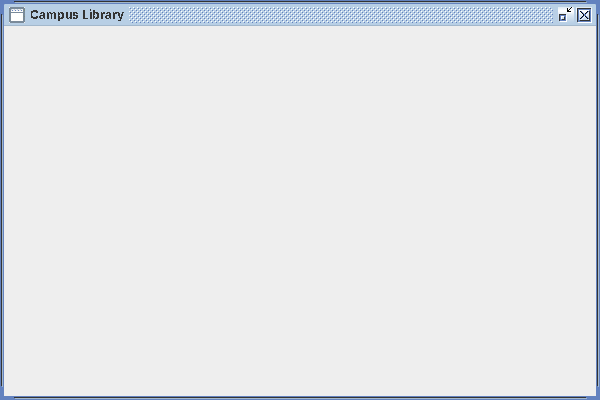
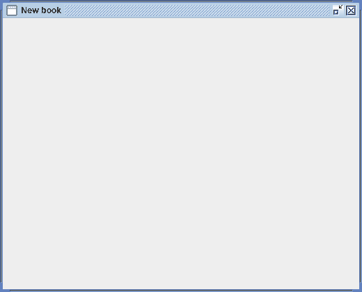
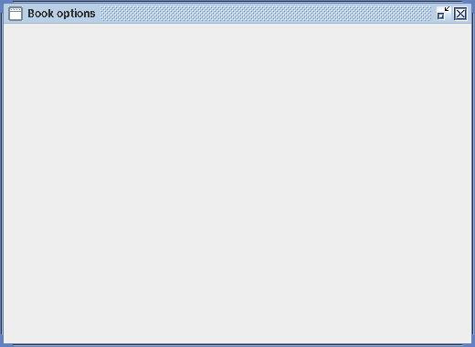

Faculty of Sciences · Computer Science Department
Build three windows of a Campus Library app with the components seen in Lecture 4: a main window with menus and dialog boxes, a form with text zones, and a window with all the buttons to make a choice.
For each step you have the real interface to build (click its numbers to name each component) and the code, given stage by stage (it cannot be copied: type it yourself). After each stage you run the program and compare your window with the picture. Click any line of code to see what it does.
JOptionPane).| Part | Time |
|---|---|
| 1. Exercise 1: Main window, menus and dialog boxes | 20 min |
| 2. Exercise 2: Text zones, labels and tooltips | 20 min |
| 3. Exercise 3: Buttons to make a choice, spinner and slider | 25 min |
| Total | 65 min |
Read this page before starting and come back to it as soon as something does not work.
TpComponents (Ctrl+Shift+P → Java: Create Java Project → No build tools).src/, named exactly: MainWindow.java, BookForm.java, BookOptions.java.| What | How |
|---|---|
| Create the project | Ctrl+Shift+P → Java: Create Java Project → No build tools → name TpComponents |
| New class | Right-click src → New File → BookForm.java (same name as the class) |
| Run the file | ▶ Run above main, or F5, or Ctrl+F5 (run without debugging) |
| Open the terminal | Ctrl+` (key under Esc) |
| Add the missing imports | Shift+Alt+O (organise imports) or click the 💡 bulb |
| Format the code | Shift+Alt+F |
| Auto-completion | Ctrl+Space |
| Rename a variable everywhere | F2 |
| Comment a line | Ctrl+/ |
| Save | Ctrl+S (always save before running) |
| Command | Meaning |
|---|---|
java -version / javac -version | Check that the JDK is installed (version 17 or more). |
cd src | Go into the folder with your .java files. |
javac MainWindow.java | Compile: creates MainWindow.class or shows the errors with their line numbers. |
java MainWindow | Run the compiled class (no .java, no .class at the end). |
java MainWindow.java | Compile and run one file in one command (Java 11+). |
| Ctrl+C in the terminal | Stop a program that does not close. |
import javax.swing.*;
import java.awt.*;
public class BookForm extends JFrame {
public BookForm() {
setTitle("New book");
setSize(520, 420);
setLocationRelativeTo(null); // center
setDefaultCloseOperation(JFrame.EXIT_ON_CLOSE);
// ... create the components, add them, add the listeners
}
public static void main(String[] args) {
SwingUtilities.invokeLater(() -> new BookForm().setVisible(true));
}
}| Lecture 4 component | Swing class | Useful methods |
|---|---|---|
| Window, title bar | JFrame | setTitle, setSize, setLocationRelativeTo, setDefaultCloseOperation |
| Menu bar, drop-down menu | JMenuBar, JMenu, JMenuItem | setJMenuBar, add, addSeparator |
| Dialog box, messages | JOptionPane | showMessageDialog, showConfirmDialog, showInputDialog |
| Label, non-editable text | JLabel | setText, setFont |
| Single-line text zone | JTextField | getText, setText, requestFocus |
| Multi-line text zone + scrollbar | JTextArea in JScrollPane | setLineWrap, append |
| Push button | JButton | addActionListener, setEnabled, setToolTipText |
| Radio buttons (1 among n) | JRadioButton + ButtonGroup | isSelected |
| Check box | JCheckBox | isSelected |
| Drop-down list | JComboBox<String> | getSelectedItem |
| Increment spinner | JSpinner + SpinnerNumberModel | getValue |
| Slider | JSlider | getValue, setPaintTicks, setPaintLabels |
| List | JList + DefaultListModel | addElement, remove, getSelectedIndex |
| Tree list | JTree + DefaultMutableTreeNode | add |
| Tabs (group) | JTabbedPane | addTab |
| Table / grid | JTable + DefaultTableModel | addRow, removeRow, getSelectedRow |
| Tool bar | JToolBar | add |
| Progress indicator | JProgressBar | setValue, setStringPainted |
| Cursor | Cursor | setCursor(Cursor.getPredefinedCursor(Cursor.WAIT_CURSOR)) |
| Layout | Use it for | Example |
|---|---|---|
BorderLayout (default of JFrame) | 5 zones: NORTH, SOUTH, EAST, WEST, CENTER | add(status, BorderLayout.SOUTH); |
FlowLayout | components in a row, one after the other | new JPanel(new FlowLayout(FlowLayout.LEFT)) |
GridLayout | a grid of equal cells (forms: label | field) | new JPanel(new GridLayout(3, 2, 8, 8)) |
Tip: build small JPanels, each with its own layout, then put the panels in the window.
addActionListener(e -> { ... }).addWindowListener(new WindowAdapter() { public void windowClosing(WindowEvent e) { ... } }) with DO_NOTHING_ON_CLOSE.Thread.sleep) freezes the window. Use javax.swing.Timer.| Message / symptom | Fix |
|---|---|
cannot find symbol JFrame | Add import javax.swing.*; (and import java.awt.*; for layouts, Font, Cursor). |
class X is public, should be declared in a file named X.java | Rename the file exactly like the class (capitals count). |
| The window does not appear | You forgot setVisible(true) in main. |
| The window is empty or tiny | Call setSize (or pack()) and add the panel with add(...). |
| Both radio buttons can be ticked | Put them in the same ButtonGroup. |
| No header on the JTable | Put the table in a JScrollPane. |
ArrayIndexOutOfBoundsException: -1 | Nothing is selected: test if (index >= 0) before removing. |
| The window freezes | Remove Thread.sleep; use javax.swing.Timer. |
';' expected / reached end of file | A ;, ) or } is missing on the line shown or just before. |
Build the main window of the Campus Library app: a title bar, a menu bar with two drop-down menus, a work area, a status bar, and a confirmation dialog before quitting.
extends JFrame. Set the title, the size 600×400 and center the window with setLocationRelativeTo(null).JMenuBar with two JMenu: File (New book, a separator, Quit) and Help (About). Attach it with setJMenuBar.JLabel; at the bottom (SOUTH) a status JLabel "Ready".JOptionPane.showMessageDialog. Quit and the ✕ button → showConfirmDialog (YES / NO): the window closes only on YES.setDefaultCloseOperation(DO_NOTHING_ON_CLOSE) + a WindowAdapter with windowClosing.Build this window in 5 stages. In each stage: type the green lines, run, and compare your window with the picture. Then go to the next stage.

MainWindow.java | # | Lecture 4 name | Swing class | Why |
|---|---|---|---|
| 1 | Title bar | JFrame.setTitle(...) | Window vocabulary (Lecture 4, module 3): name of the window, minimise, maximise, close. |
| 2 | Menu bar | JMenuBar | The entry point of the drop-down menus (module 4: menus). |
| 3 | Drop-down menu | JMenu + JMenuItem | A list of commands triggered by a click; the separator groups the items. |
| 4 | Work area (non-editable text) | JLabel | The work area shows the content of the window. |
| 5 | Status bar | JLabel in BorderLayout.SOUTH | Gives feedback to the user ("Ready", "New book…"). |
| 6 | Close button → dialog box | WindowAdapter.windowClosing + JOptionPane.showConfirmDialog | A dialog box (secondary window) asks for confirmation before an important action. |
Build the form New book: three single-line text zones with their labels, a multi-line summary with a scrollbar, a tooltip, and a Save button that shows the result.
JPanel with GridLayout(3, 2, 8, 8): label on the left, JTextField on the right.setToolTipText(...): hover the field 1 second to see it.JTextArea(6, 30) with setLineWrap(true), placed inside a JScrollPane with a titled border.getText() and write the result in a JLabel.Build this window in 5 stages. In each stage: type the green lines, run, and compare your window with the picture. Then go to the next stage.

BookForm.java | # | Lecture 4 name | Swing class | Why |
|---|---|---|---|
| 1 | Label | JLabel | Text attached to a component: it tells the user what to type. |
| 2 | Single-line text zone | JTextField | One piece of information on one line (input task). |
| 3 | Text zone with a tooltip | setToolTipText(...) | The help bubble appears after a short hover (utility windows, module 3). |
| 4 | Multi-line text zone + scrollbar | JTextArea in a JScrollPane | A long text on several lines; the scrollbar appears when needed. |
| 5 | Non-editable text (result) | JLabel.setText(...) | Displays information; the user cannot type in it. |
| 6 | Push button (action) | JButton + ActionListener | Executes an action when clicked (triggering task). |
Build the window Book options with one component for each kind of choice: drop-down list, radio buttons, check box, increment spinner and slider. A button shows a summary in a dialog box.
JComboBox<String> with 4 categories: one value among many, only the chosen value is visible.JRadioButton (Paper, Digital) in the same ButtonGroup: ticking one removes the other.JCheckBox "Available for loan": a yes / no option.JSpinner with new SpinnerNumberModel(1, 1, 10, 1): value, min, max, step.JSlider(0, 5, 3) with ticks and labels: an approximate value.getSelectedItem(), isSelected(), getValue() and show it with showMessageDialog.Build this window in 6 stages. In each stage: type the green lines, run, and compare your window with the picture. Then go to the next stage.

BookOptions.java | # | Lecture 4 name | Swing class | Why |
|---|---|---|---|
| 1 | Drop-down list | JComboBox<String> | The chosen value is always visible; the list opens with the arrow. |
| 2 | Radio buttons (1 among n) | JRadioButton + ButtonGroup | Exclusive alternatives: one choice only. |
| 3 | Check box | JCheckBox | Between 0 and m options, not exclusive (here one yes/no option). |
| 4 | Increment spinner | JSpinner + SpinnerNumberModel | A precise value with min, max and step. |
| 5 | Slider (straight selector) | JSlider | An approximate value, with or without the number displayed. |
| 6 | Push button → dialog box | JButton + JOptionPane | Triggers the action and shows the result in a message. |
Human-Computer Interaction · Université d'Alger 1 · Your “I'm done” ticks are saved in your browser only.